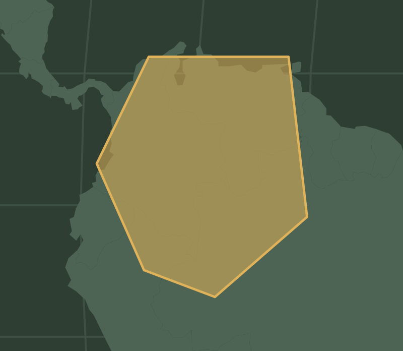

Planta · Leguminosas · Orinoco, Amazonía y Caribe
Yopo
Anadenanthera peregrina (L.) Speg.
Un árbol espinoso de las sabanas y riberas del Orinoco cuyas semillas, tostadas y molidas, se convierten en un polvo que se sopla por la nariz. Es uno de los rapés visionarios más conocidos de América y su uso ritual sigue vivo en comunidades del Orinoco y la Amazonía.12
También se llamayopo · jopo · cohoba · cojoba · parica · niopo · mopo · nopo · árbol del calcio
- Qué es
- Árbol cuyas semillas dan un rapé visionario
- Territorio
- Orinoco, Amazonía y Caribe
- Parte usada
- Semillas
- Principios activos
- Bufotenina, con trazas de DMT y 5-MeO-DMT
- Empieza y dura
- Sin datos fiables en las fuentes consultadas
- Quién guarda su memoria
- Piaroa, Guahibo, Maipures y otros pueblos del Orinoco
Botánica
El árbol del yopo
Anadenanthera peregrina es un árbol perenne nativo del Caribe y Sudamérica; alcanza hasta 20 m de altura y tiene la corteza espinosa.34 Sus flores son de color amarillo pálido a blanco y esféricas.5
Se conoce como yopo, jopo, cohoba, cojoba, parica o «árbol del calcio».4
Antes se llamaba Piptadenia peregrina, nombre con el que aparece en buena parte de la literatura clásica.6
Está muy emparentada con Anadenanthera colubrina, de la que se obtiene en el norte de Argentina el cebil, y cuyas semillas tienen una composición química parecida.25
- Familia
- Leguminosas (Fabaceae)
- Altura
- Hasta 20 m
- Corteza
- Espinosa
- Parte usada
- Semillas
Memoria y tradición
Un rapé que viene de lejos
Según ICEERS, su uso ritual sigue vivo en varias comunidades indígenas, sobre todo en el Orinoco y la Amazonía, dentro de sistemas espirituales complejos; su uso no busca lo recreativo, sino restablecer el equilibrio espiritual, emocional y colectivo.12
El uso del yopo está documentado arqueológicamente desde hace más de 4000 años: una datación por radiocarbono dio 2130 a. C.4 En la costa central de Perú se encontraron bandejas y tubos de inhalación similares a los del yopo que datan de 1200 a. C.4
En 1801 Alexander von Humboldt describió su uso entre los maipures del Orinoco, aunque atribuyó su fuerza a la cal mezclada con semillas fermentadas.1 Medio siglo después Richard Spruce documentó con detalle su uso entre los guahibo.2
Entre los piaroa, los hombres toman el yopo con una bandeja redonda y tubos en forma de Y hechos de hueso de ave.7 Los piaroa lo incluyen en sus mitos de origen, y sus relatos advierten también de los peligros de abusar de él.8
Se creyó durante siglos que la cohoba de los taínos era una forma de tabaco, hasta que Safford la identificó con el rapé de Piptadenia peregrina.1
En el tiempo
Fecha radiocarbono de semillas de Anadenanthera asociadas a uso alucinógeno
Cita española en La Española de la cohoba
Humboldt describe el yopo entre los maipures
Richard Spruce anota su preparación y uso (Orinoco)
Sus nombres
- yopo, jopo
- Orinoco (Colombia, Venezuela)
- cohoba, cojoba
- Caribe taíno
- niopo, nopo, mopo
- otros pueblos del Orinoco
- parica
- Amazonía
Territorio y cuidado
Orinoco, Amazonía y Caribe

Qué ayuda
- Conocerlo como saber de pueblos del Orinoco.
- No comprar polvos de origen incierto.
- Respetar el contexto ritual de quienes lo guardan.
Qué contiene
Triptaminas en la semilla
Según ICEERS, el compuesto más abundante cuando se administra por la nariz es la bufotenina (5-HO-DMT), con trazas de DMT y 5-MeO-DMT.2
Las semillas de A. colubrina tienen una composición química similar, con la bufotenina como componente principal.5
En un rapé de los piaroa se detectó harmina, un compuesto que no procede de Anadenanthera.7
La experiencia
Un uso ritual, no recreativo
Las fuentes consultadas describen su uso como parte de contextos de sanación, sociales y chamánicos.8
No ofrecen datos fiables de aparición ni de duración.
Esquema orientativo: cambia con la preparación, la cantidad y la persona.
Investigación
Qué se ha estudiado
Los estudios etnobotánicos clásicos de Schultes, Holmstedt y von Reis Altschul identificaron la planta y sus triptaminas.910
Hay un trabajo sobre la combinación del yopo con Banisteriopsis caapi entre los piaroa del sur de Venezuela.11
Alcance de estos datosEstudio etnobotánico y químico; poca investigación clínica.
Con cuidado
Lo que conviene saber antes
Para seguir
Libros y medicinas emparentadas
Fuentes
De dónde sale cada dato
- ICEERS. Yopo: Basic Info. iceers.org/yopo-basic-info/.
- ICEERS. Yopo: Basic Info (origen e historia, química). iceers.org/rape/.
- Wikipedia. Anadenanthera peregrina. en.wikipedia.org/wiki/Anadenanthera_peregrina.
- Wikipedia. Anadenanthera peregrina (arqueología). en.wikipedia.org/wiki/Anadenanthera_peregrina.
- Wikidoc. Anadenanthera peregrina. wikidoc.org/index.php/Anadenanthera_peregrina.
- Schultes, R. E., Lindgren, J.-E., Holmstedt, B. y Rivier, L. Botanical and chemical collections of Anadenanthera peregrina. archive.org/download/biostor-160945/biostor-160945.pdf.
- MAPS. Bibliografía: rapés del Orinoco. bibliography.maps.org/resources/download/12242.
- Tripsitter. Psychedelic Snuffs of South America: Yopo, Willka & Epena. tripsitter.substack.com/p/psychedelic-snuffs.
- MAPS. Bibliografía: rapé yopo. bibliography.maps.org/resources/download/15073.
- Schultes, R. E. y Hofmann, A., citados en la bibliografía de MAPS. bibliography.maps.org/resources/download/15073.
- Wikipedia. Cohoba (cita a «Snuff Synergy», Journal of Psychoactive Drugs 34 (3): 273–279). wikipedia.com/wiki/Cohoba.
- Mapa APDER, con datos de Natural Earth · dominio público
- Dibujos de moléculas APDER
Última revisión: 24 de noviembre de 2026. Si ves un error, escríbenos a info@apder.org.